Biscoitos caseiros feitos com receita de família, carinho em cada etapa e o gostinho de comida feita em casa.
Conheça saboresO que nos torna diferentes
Da receita de família à caixinha que chega até você, tudo é feito com calma, ingredientes bons e muito carinho.
Cada receita é feita com atenção aos detalhes, trazendo o sabor caseiro que lembra momentos em família.
Trabalhamos com paixão para garantir que cada fornada seja preparada com cuidado, do início ao fim.
Selecionamos ingredientes de primeira e seguimos processos artesanais para entregar biscoitos frescos e únicos.
Mais que biscoitos
Cada receita nasce do cuidado com os detalhes, do tempo respeitado e do carinho em cada etapa. Na Krug, o sabor não vem sozinho — ele chega acompanhado de memória, afeto e da alegria de presentear alguém especial.
Conheça nossos momentos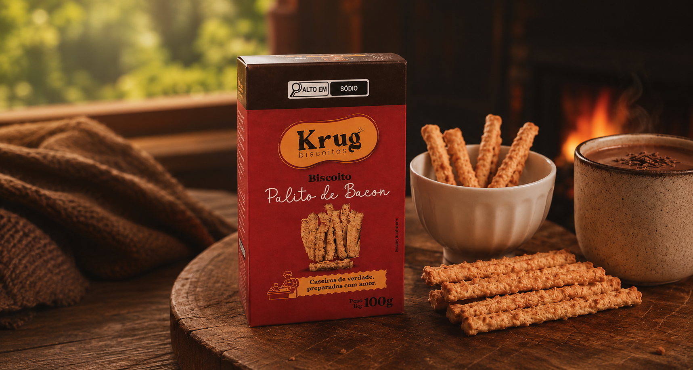
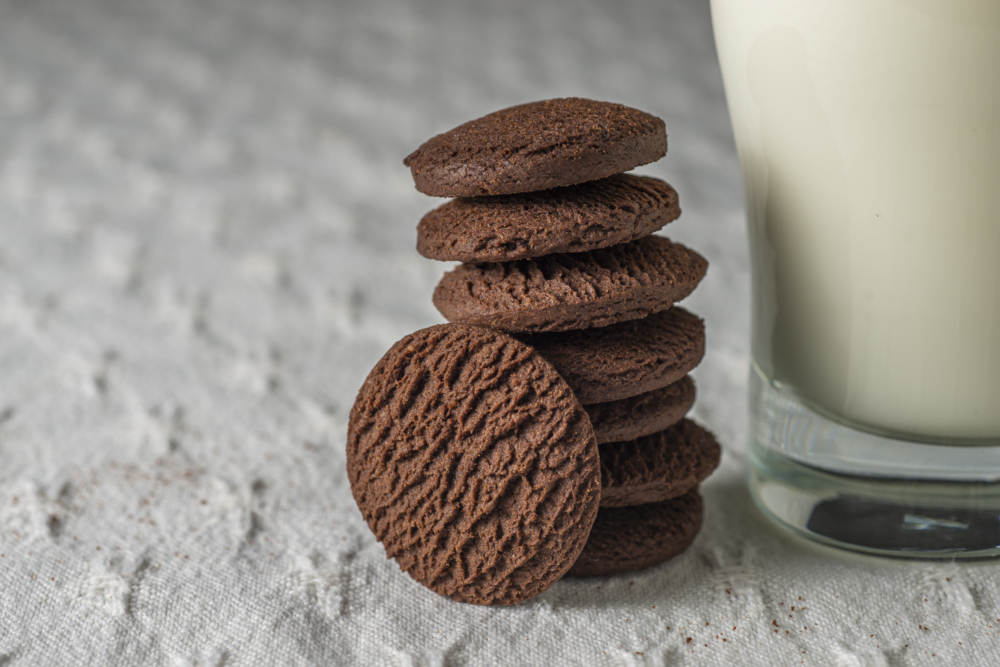
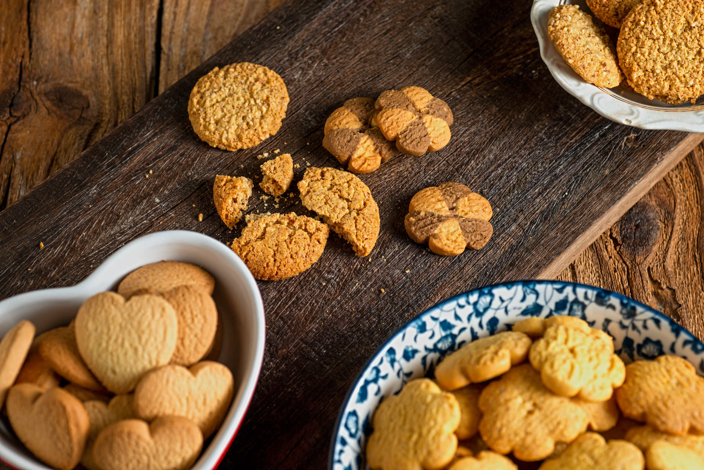
Um biscoito, um café e o tempo que a gente merece.
Krug Biscoitos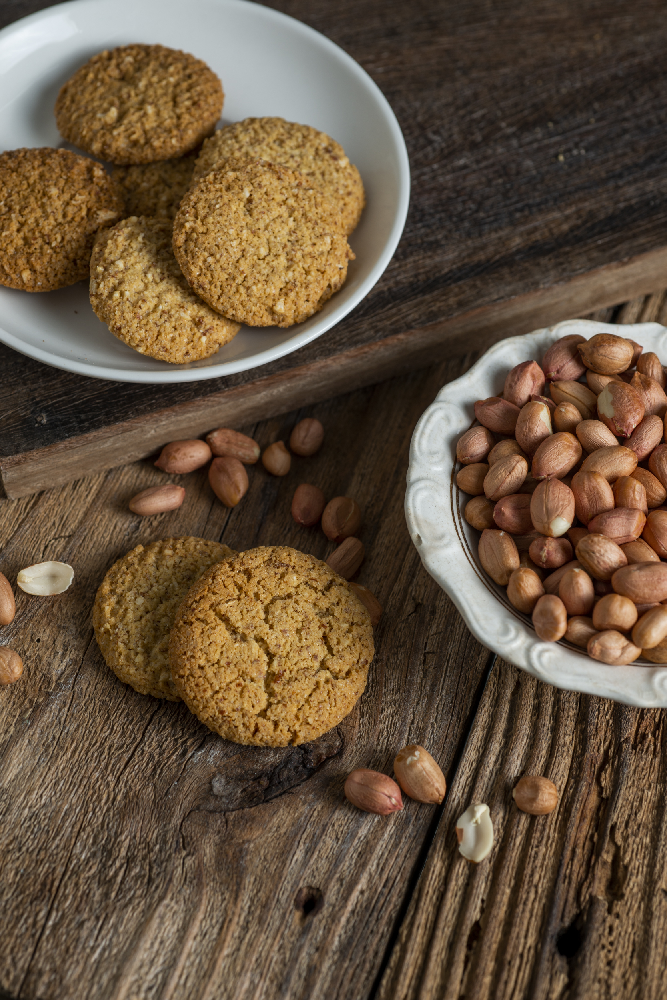
Feito para dividir. Difícil é não repetir.
Krug Biscoitos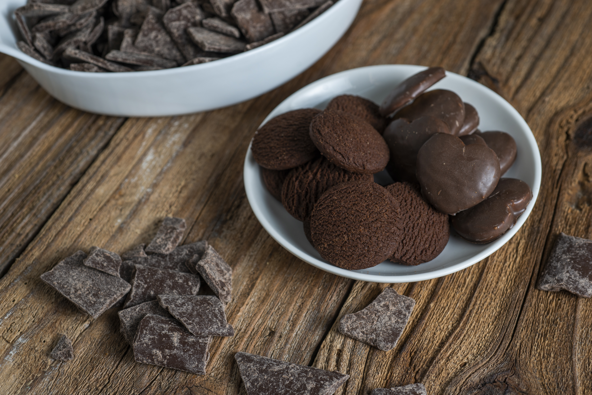
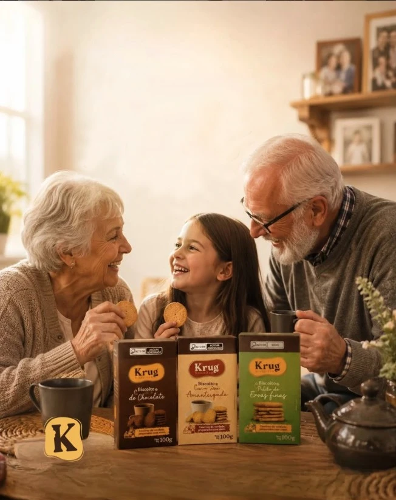
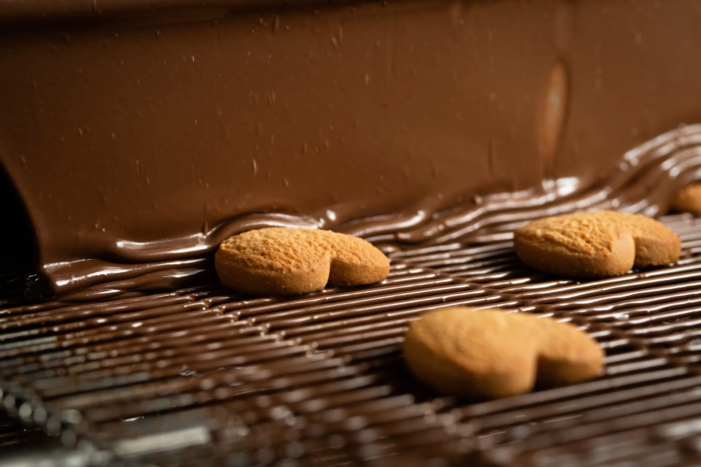
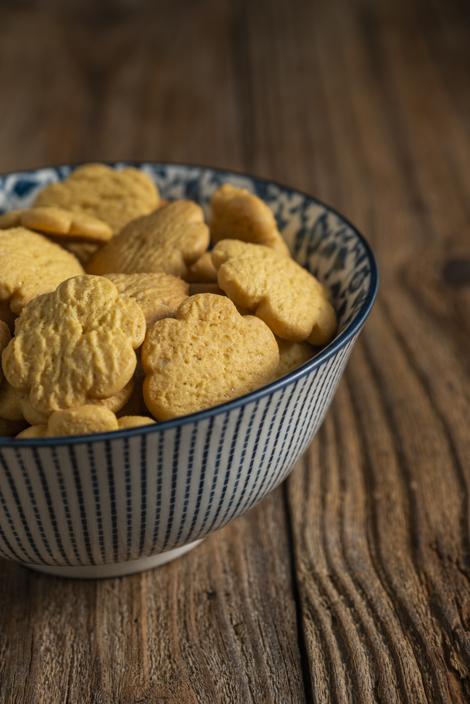
"Não existe problema que um biscoito quentinho não possa amenizar." — frasesdobem.com
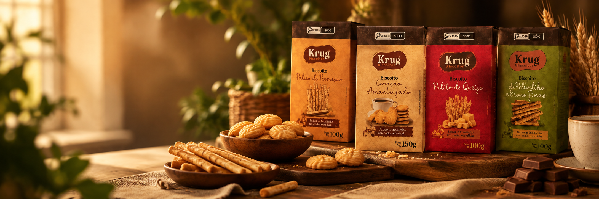
Nossa história
A Krug Biscoitos nasceu em 2022, em Igrejinha, na serra gaúcha, com um propósito simples: transformar o ato de comer um biscoito em um momento especial.
A Vivian trouxe para cada receita o carinho, o cuidado e o sabor que sempre fizeram parte da história da sua família. Hoje, cada fornada sai da nossa fábrica em Igrejinha feita à mão, com ingredientes selecionados, e chega até você na caixinha que virou a cara da Krug.
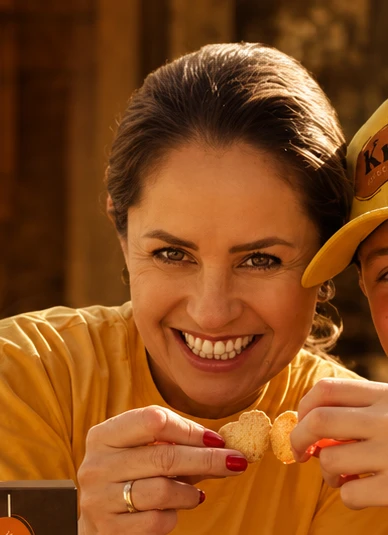
Fale com a gente